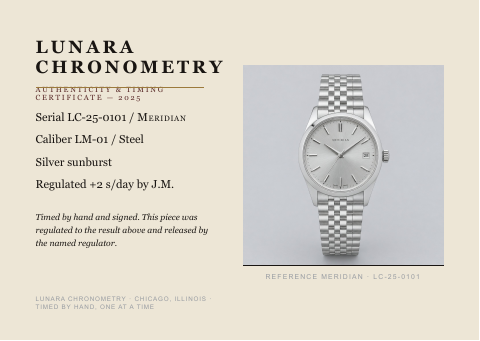

Lunara Chronometry - Autumn watch campaign
Client brief
Lunara autumn campaign and dealer materials
We need an autumn campaign image and a separate set of clear dealer-facing materials. The campaign can carry our warm tonal treatment; product information must remain accurate, especially dial colour and finish.
Start with one 1920 x 1080 px key visual featuring a single named watch. Keep the watch dominant, identify its reference and retain a dial appearance consistent with the approved description for that reference.
Please make five product-page features at 1440 x 1800 px, one per watch in lunara_register.csv. Use the matching case and preserve its geometry. Include its reference, caliber, case metal and dial finish exactly as the register writes them.
The dealer launch sheet is a two-page A4 PDF covering all five references. Pair each watch photograph with its reference, dial finish and caliber. Include the fixed timing line from lunara_notes.txt word for word, and give the layout the restraint appropriate to our price position.
Use the certificate as a visual reference, not a typography template: the current brand type rules govern the new files. The older square-store and transparent-image placements in the notes are not additional exports for this job. The seven files named in the requested deliverables are the delivery scope.
Brand identity
Lunara Chronometry
Lunara builds mechanical watches in small runs and regulates each one by hand before it ships. We sell presence, finish and the credibility of a named regulator, not a colour or a trend. Every piece leaves with its own certificate, and the pictures have to read as confidence.
Audience
Collector-literate buyers, 35 to 60, who judge a watch on form, finish and the hand behind it.
Positioning
Four to twelve thousand dollars a piece, positioned as independent horology: above fashion watchmaking and below the grand houses.
Palette
Warm near-black
#191512 mandatory as the type colour wherever type sits on bone cream (small captions, footer lines and small labels excepted)Type on Bone cream other than small captions, footer lines and small labels: the wordmark, headings, reference names in headings, body, specification, fine print and the timing line, as on lunara_certificate_2025.pdf, and thin frame borders, as around its photograph. It may also be a solid dark ground or panel carrying Bone cream type, as the Dealer B panel colour in lunara_notes.txt, or type set directly on a photograph.Bone cream
#EDE6D6 mandatory as the type colour wherever type sits on warm near-black or oxbloodThe main light ground, as on lunara_certificate_2025.pdf; all type set on Warm near-black or Oxblood; and type set directly on a photograph.Tempered steel
#9A9EA3 optional accentSmall captions, footer lines, labels and dividers only, as the photo caption (a reference and serial) and the footer lines on lunara_certificate_2025.pdf. Never a ground, a panel or body text.Aged brass
#9C7A3C optional accentHairline rules and dividers only, as the rule under the wordmark on lunara_certificate_2025.pdf. Always a flat colour, never a metallic effect, and never type, a ground or a panel.Oxblood
#5A2A28 optional ground or panel; optional small labelA solid panel or ground carrying Bone cream type, as the Dealer A panel colour in lunara_notes.txt, or a small label on Bone cream, as the certificate line on lunara_certificate_2025.pdf. Never body text.Colour rules
- Distribution
- Grounds and panels are Bone cream, Warm near-black or Oxblood and nothing else; the grey sweep or stone inside a supplied photograph is photography, not a designed ground. On Bone cream, the wordmark, headings (reference names in them included), body, specification, fine print and the timing line are Warm near-black, as on lunara_certificate_2025.pdf; small captions and footer lines, including a reference-and-serial caption, may instead be Tempered steel, as that card's photo caption and footer are; Oxblood may set a small label, as the certificate label on that card is. On Warm near-black or Oxblood, all type is Bone cream. Type set directly on a photograph is Bone cream or Warm near-black. Warm near-black and Bone cream are mandatory only in these type roles, so a page need not show both: a product page may set its type straight on its photograph, and a dealer sheet may run Oxblood panels. Aged brass is for hairline rules and dividers only and Tempered steel for small captions, footer lines, labels and dividers only; neither is ever a ground, a panel or body text, which keeps both to small accents. The clean white that lunara_notes.txt names is for square store tiles, and none of these outputs is a store tile.
- Opacity
- Every palette colour is used solid, at 100% opacity. No tint, transparency, gradient, shadow, metallic or blend effect is applied to any palette colour, and no scrim, gradient or overlay of any colour, black and white included, is laid over a photograph: type sits on a clear area of the photograph or on a solid panel. The warm single-tone treatment with fine grain that lunara_notes.txt sets for the campaign is a grade of the photograph itself, not an overlay.
- Not allowed
- No colour outside the five palette hexes for type, grounds, panels, rules or icons, and no metallic, foil, gradient or glow rendering of any colour, Aged brass included: every colour is flat. The brand sells presence and finish, not a colour or a trend.
- Photography
- Apart from the campaign's warm single-tone treatment that lunara_notes.txt sets, photographs keep their own corrected colour and are never recoloured toward the palette. The deep blue sunray dial in lunara_pdp_vesper.jpg and the lacquered oxblood dial and strap in lunara_pdp_ardent.jpg are product colours: they are not pushed toward Bone cream, Oxblood or any other palette colour, nor read as uses of it.
Typography
// Type system
Lunara Chronometry
Timed by hand, one at a time
Aa
Boska
Aa
Suisse Int'l
The samples show the hierarchy, not the licensed font outlines. Use the named fonts and settings below.
Apply these settings to newly typeset text, including headings, supporting copy and fine print. Do not change lettering already inside a photograph or rebuild a supplied logo to match a font. A style listed here does not ask you to add copy or a deliverable that the brief does not request. If a named font is unavailable, ask us before substituting it.
Sizes apply at the delivered canvas size, not the browser's zoom level. Tracking is in thousandths of an em: +20 means 0.020 em, not 20 pixels. Leading means the distance between text baselines. It applies only to multiline text. Where a point value is used on a digital canvas, 1 pt = 4/3 px; do not use the image's DPI metadata to change it.
01
Display / H1
Lunara Chronometry
The key visual wordmark, always stacked as Lunara over Chronometry, never on one line. On a dealer sheet the heading takes the same setting at 28 pt on 31 pt.
02
Subheading / H2
Meridian, caliber LM-01
Reference names on the key visual: 40 px / 44 px. On the five product-page features: 48 px / 53 px. In dealer-launch.pdf, reference headings may be smaller than the 28 pt main heading; their size and leading are flexible. Numerals switch to Suisse Int'l Regular at the surrounding type size.
03
Body
Every piece is regulated by hand and signed before it ships.
Supporting copy: 20 px / 30 px. Digital specification text: 22 px / 32 px. All dealer-sheet body and specification text: 10 pt / 14 pt. At most 65 characters per line.
04
Fine print
LC-25-0101 · +2 s/day
Digital prices, serials and timing results: 16 px / 22 px. On the dealer sheet use the 10 pt / 14 pt text setting, retaining +20 tracking and tabular lining figures.
- The 72 px wordmark is for watch-keyvisual.png and any wordmark on a product feature. The dealer-sheet heading is 28 pt / 31 pt. Follow the output-specific overrides in the row notes.
- Newly typeset wordmarks are stacked as Lunara over Chronometry, in Boska Medium small caps with +180 tracking.
- All numerals use Suisse Int'l Regular with tabular lining figures, including numerals inside a Boska heading. Match the surrounding font size.
- Timing text uses Suisse Int'l Regular, never italic. Keep the approved timing wording unchanged.
- The older certificate is a visual reference, not the current typography standard. Leave lettering inside watch photographs unchanged.
Voice
Exact, understated, collector to collector. Example line: 'Five references. Each one regulated by hand and signed.'
Existing brand materials
We have last season's certificate as it went to the printer and an approved wording note. The certificate is a visual reference only; where it differs from the current type rules, the type rules govern. The timing line is fixed and cannot be reworded, and the featured reference moves each season.
Source assets (23)



lunara_certificate_2025.pdf
PDF · Source · 215.6 KB


LUNARA CHRONOMETRY — notes (client-supplied, approved) FIVE REFERENCES Meridian - hand-wound, silver sunburst dial, steel case & bracelet, mirror-polished. Selene - automatic, grained cream dial, steel case & bracelet. Ardent - hand-wound, lacquered oxblood dial, steel case on oxblood strap.


serial,reference,caliber,case_metal,dial_finish,regulator_initials,timing_result,date,image LC-25-0101,Meridian,LM-01,Steel,Silver sunburst,J.M.,+2 s/day,2025-08-04,lunara_pdp_meridian.jpg LC-25-0102,Selene,LM-02,Steel,Grained cream,J.M.,-1 s/day,2025-08-05,lunara_pdp_selene.jpg LC-25-0103,Ardent,LM-01,Steel,Lacquered oxblood,J.M.,+3 s/day,2025-08-06,lunara_pdp_ardent.jpg LC-25-0104,Halcyon,LM-03,Steel,Silver,J.M.,0 s/day,2025-08-07,lunara_pdp_halcyon.jpg LC-25-0105,Vesper,LM-02,Steel,Deep blue
Requested deliverables (7)
Autumn watch key visual
Autumn watch key visual
watch-keyvisual.pngPNG · 1920 x 1080 pxWatch product-page feature
Watch product-page feature - LC-25-0101
watch-feature-r002.pngPNG · 1440 x 1800 pxSource: lunara_register.csv, row 2 · lunara_pdp_meridian.jpg
Watch product-page feature - LC-25-0102
watch-feature-r003.pngPNG · 1440 x 1800 pxSource: lunara_register.csv, row 3 · lunara_pdp_selene.jpg
Watch product-page feature - LC-25-0103
watch-feature-r004.pngPNG · 1440 x 1800 pxSource: lunara_register.csv, row 4 · lunara_pdp_ardent.jpg
Watch product-page feature - LC-25-0104
watch-feature-r005.pngPNG · 1440 x 1800 pxSource: lunara_register.csv, row 5 · lunara_pdp_halcyon.jpg
Watch product-page feature - LC-25-0105
watch-feature-r006.pngPNG · 1440 x 1800 pxSource: lunara_register.csv, row 6 · lunara_pdp_vesper.jpg
Watch dealer launch sheet
Watch dealer launch sheet
dealer-launch.pdfPDF · 210 x 297 mm · 2 pages